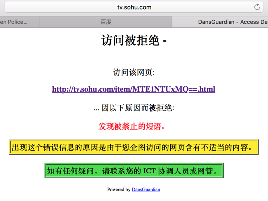

DansGuardian
DansGuardian可以限制客户端的访问，通过这个软件，我们可以限制哪些网站不可以访问、哪些内容不能下载。
1、下载DansGuardian，提供一个网址http://www.rpmfind.net/linux/RPM/dag/redhat/el5/i386/dansguardian-2.8.0.6-1.2.el5.rf.i386.html
2、安装
|
|
3、修改配置文件“/etc/dansguardian/dansguardian.conf”，搜索“filterport”将端口改为8088。默认是8080，和tomcat冲突。关于proxyport端口，使用的是proxy服务器端口，默认3128，如果你修改了proxy的端口，那么这里也要改成对应的端口。
|
|
4、配置防火墙，打开tcp的8088端口
|
|
5、启动服务
|
|
6、修改客户端的代理设置，将代理端口改成dansguardian的端口8088，然后去百度一些内容，不良的网站就被屏蔽了。注意，这里端口必须修改，不可以使用3128.
7、增加过滤网址。
1）修改配置文件“/etc/dansguardian/bannedsitelist”，在后面追加要过滤的网址。重启服务
|
|
2）客户端访问百度新闻
8、过滤关键字
1）修改配置文件“/etc/dansguardian/bannedphraselist”，在后面追加要过滤的网址。重启服务
|
|
2）使用客户端浏览器搜索sex，发现网页打不开

9、过滤下载内容
1）修改配置文件“/etc/dansguardian/bannedextentsionlist”，里面默认已经有很多被禁止下载的格式了，如果要去掉某个限制，在前面加#
|
|
2）使用客户端浏览器下载一个文件
10、查看日志。可以通过日志文件“/var/log/dansguardian/access.log”来分析当前哪些内容被拦截了。
|
|
Copyright@david zhytwj2018@163.com